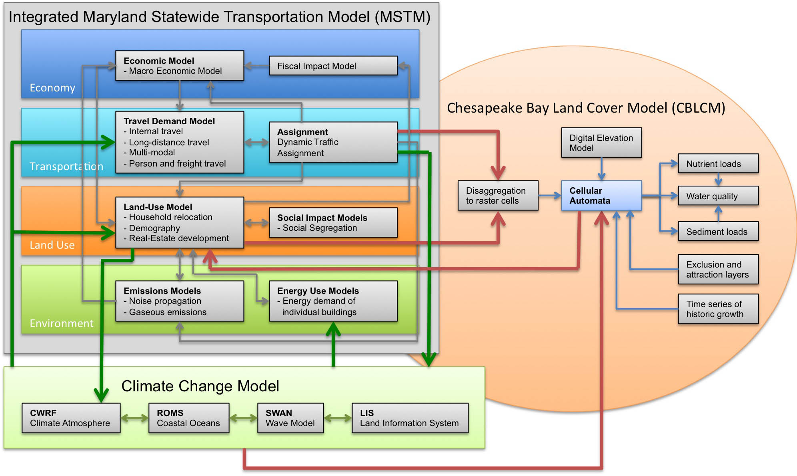
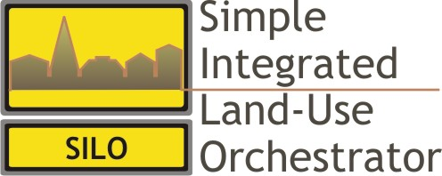
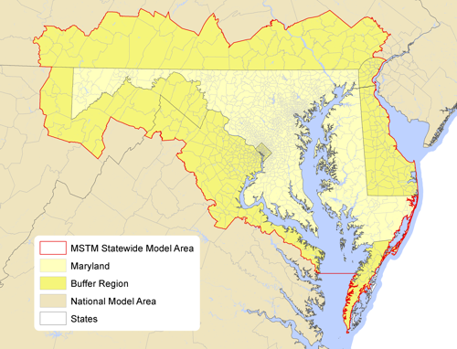
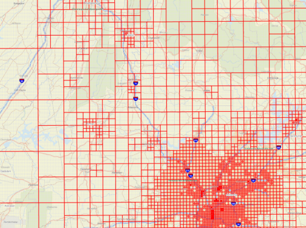

My
research interests focus on the development of integrated
land-use/transportation projects and their application in
urban and regional planning. This section lists the most
relevant research projects I am currently working on.
Developing Sustainable Regional Strategies
Funded through SESYNC by the National Science Foundation, I am leading a research project to develop strategies that support sustainable regional development. With a team of eight researchers, several models are integrated to test policies on their impact on sustainability, including models that cover land use, transportation, environmental impacts, land cover and climate change. In the course of this two-year project, four workshops with international experts in model integration will be held to develop novel strategies of model integration. As a testbed, this project links with the PRESTO! project that aims at developing a sustainable development strategy for the Baltimore-Washington region. Is is expected that through advanced model integration, this project will be able to develop and test stustainability strategies that cannot be analyzed with individual models alone.
SILO: Simple Integrated Land-Use
Orchestrator
SILO
is a new land-use model that is designed as a discrete
choice microsimulation model. Discrete choice means that
decisions (such as a decision of a household to move to a
new dwelling) are modeled explicitly based on utilities at
the current dwelling location and expected utilities at
alternative dwelling locations. Being a microsimulation
model, every household and person is simulated individually.
SILO models household relocation, non-spatial demographic
changes (such as birth, aging, marriage or having children),
developers' decisions to build new residential buildings and
changes to dwellings over time (including renovation,
deterioration and demolition).
SILO is built as a middle-weight tool. It is fully
integrated with a travel demand model, and therefore, more
complex than sketch-planning tools (such as CommunityViz or
UPlan). On the other hand, it is built to function with less
rigorous data collection and estimation requirements, making
SILO simpler to implement than traditional large-scale
land-use models (such as PECAS or UrbanSim).
SILO is an open-source software and was initially developed
with funding by Parsons Brinckerhoff. The prototype
application was implemented for the Metropolitan Area of
Minneapolis/St. Paul, Minnesota. Currently, I am working as the Principal Investigator on an updated
version is implemented for the State of Maryland, funded by
the Maryland Department of Transportation. I have designed
and implemented this model from scratch. The SILO website provides further
information.
MSTM: Maryland Statewide Transportation
Model
The
Maryland Statewide Transportation Model (MSTM) is an
advanced trip-based model that covers the State of Maryland
plus surrounding areas at the statewide layer and the
remainder of North America at the regional layer. Since
2006, the Maryland State Highway Administration (SHA) has
developed the MSTM with support from the National Center for
Smart Growth (NCSG) at the University of Maryland and
Parsons Brinckerhoff. MSTM is a multi-level model that
covers local trips and long-distance trips as well as person
travel and freight. It has become a policy decision support
tool that is applied extensively for scenario analysis,
corridor studies, project forecasts and future
transportation performance measurement.
The MSTM is designed as a multi-level model that currently
works at two geographies. The statewide level covers not
only the State of Maryland but also surrounding areas,
including Washington, D.C., Delaware, and parts of New
Jersey, Pennsylvania, Virginia and West Virginia. The
national layer covers the continental North America, including
Canada and Mexico. This national layer accounts for all
long-distance trips. A more detailed description of the MSTM
can be found on tfresource.
I have worked on most modules of the MSTM, some of which I
designed from scratch. As the Principal Investigator, I am currently revising the model to
work from a Synthetic Population that has been created with
SILO, and on integrating the MSTM with an auto-ownership
model.
Redefining Spatial Resolution in
Modeling
Travel demand models use zones as origins and destinations
of trips. Commonly, such zones are derived from census
tracts or other spatial definitions of neighborhoods. Urban
zones are smaller and rural zones are larger, but
consistency in spatial resolution across the study area is
rarely achieved. Creating a new zone system is a manual and
laborious effort, and therefore, rarely undertaken.
|  |
| Raster cells in Georgia: Atlanta
to Chattanooga |
For the Georgia statewide model, I developed a method to
generate raster cells that are smaller in urban areas and
larger in rural areas. By allocating many smaller raster
cells to dense areas, resources are allocated most
efficiently. The resolution across the study area is
consistent, i.e. the resolution changes with density and
different areas with the same density receive approximately
the same number of raster cells. The procedure is very
flexible and can generate just a few raster cells or many
raster cells, depending on the resolution needed for a
certain purpose. This raster cell procedure is currently
refined for the Maryland Statewide
Transportation Model. With help of the graduate
student Yuchen Cui, raster cells are not defined based on
population and employment (as implemented in Georgia) but
based on number of trips generated. The code is open-source and can be downloaded here: http://moeckel.github.io/gr/. |